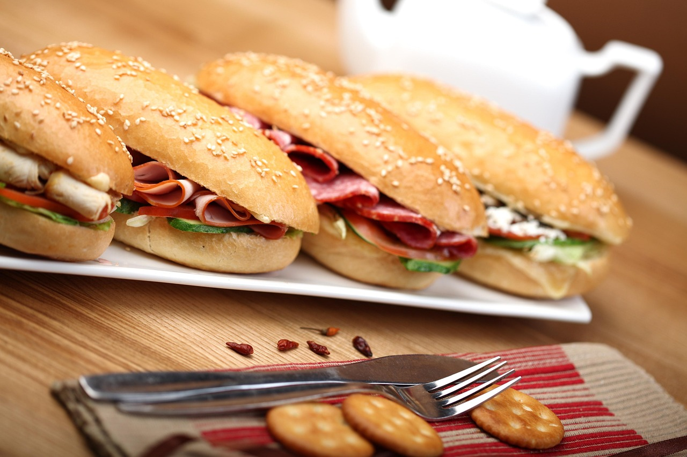

Nestled in the heart of Kenosha, Wisconsin, The Pizza Place has been a
beloved local institution since 1965. With its retro charm and warm,
welcoming atmosphere, it’s more than just a restaurant—it’s a community
gathering spot where generations have come together over slices of
handcrafted pizza and hearty sandwiches. The Pizza Place’s enduring
popularity is rooted in its commitment to quality ingredients, time-tested
recipes, and a menu that balances tradition with a touch of modern flair.

Specializing in pizza, sandwiches, salads, and cocktails, The Pizza Place
offers something for everyone. Whether you're craving a classic pepperoni
pie, a fresh Chef salad, or a signature cocktail to wind down the evening,
the menu is designed to satisfy. The kitchen prides itself on using
locally sourced produce and meats whenever possible, and the bar features
a curated selection of Wisconsin craft spirits and brews. It’s the kind of
place where the food is as memorable as the company you keep.
Beyond its menu, The Pizza Place is deeply woven into the fabric of
Kenosha’s community. From hosting local art nights and trivia events to
supporting neighborhood initiatives, the restaurant has always been more
than a business
—it’s a legacy. Patrons often share stories of their first
dates, family dinners, and celebrations held within its cozy walls. With
over six decades of history, The Pizza Place continues to serve up not
just great food, but a sense of belonging that’s hard to find anywhere
else.
PIZZA
Every Great Pizza Starts with Our Thin Crisp Crust, House-made for over 50
years!
$12/$15/$18
$12/$14/$17
$12/$15/$19
$14/$16/$19
$15/$19/$23
$11/$14/$17
$14/$16/$19
$14/$16/$19
Build Your Own Pizza!
BASIC CHEESE
Made with our Homemade Thin Crisp Crust
$9/$11/$13
add ingredients listed below to our basic cheese
Sausage, Pepperoni, Ham, Smoked Bacon, Anchovies, or Feta Cheese
$1/$2/$3
Shrimp or Marinated Chicken
$3/$4/$5
$1/$1/$2
$4
$5
$8
$7
$8
$8
Salads can be made with fresh Baby Spinach or Fresh Cut Romaine Lettuce
for an additional $2

Served on our Hot Crusty Italian Bread with Kettle Cooked Chips and a
Pickle
Submarine Sandwiches
Traditional
Cotto Salami and Bologna, Sliced Wisconsin White Colby Cheese, Tomatoes,
Onions, Lettuce and Salad Dressing.
8 in. $6 16 in. $12 24 in. $18
Three Cheese
Fresh Sliced Wisconsin Cheddar & White Colby, with Swiss, Tomatoes,
Onions, Lettuce and Salad Dressing.
8 in. $6 16 in. $12 24 in. $18
Specialty Sandwiches
REUBEN
Hot Corned Beef, Creamy Swiss Cheese, Zesty Dressing with Spiced
Sauerkraut.
$7
YORKSHIRE BEEF
Tender Roast Beef with Fresh Sliced Wisconsin Cheddar Cheese and a side of
Au Jus.
$7
RACHEL
Tender Roast Beef, Creamy Swiss Cheese and Spiced Sauerkraut.
$7
HAM & SWISS
Fresh Sliced Premium Lean Deli Ham, Creamy Swiss Cheese, Shredded Lettuce,
and Salad Dressing.
$7
ITALIAN MEATBALL
6 Large Savory Meatballs Stewed in an Italian Tomato Sauce, topped with
Mozzarella Cheese.
$7
TURKEY DELUXE
Tender Sliced Whole Turkey Breast, Shredded Lettuce, Tomatoes, and Zesty
Dressing.
$7
MEAT LOAF
Homemade with Lean Ground Beef, Served Cold with Lettuce and Salad
Dressing.
$6
TUNA SUPREME
Fresh Made Salad of Celery, Onion, & Tuna with Shredded Lettuce, Tomatoes,
Sliced Wisconsin Cheddar Cheese, and Zesty Dressing.
$7
CLUB
Tender Sliced Turkey Breast, Lean Ham, Wisconsin Cheddar Cheese, Tomatoes,
Lettuce and Salad Dressing.
$5
$8
$8
$8
$8
$8
$8
$8
$8
$8
$8
$8
BEER, WINE, & SELZER
Miller Lite
Miller High Life
Old Milwaukee
$4
White Claw
Truly
New Glarus (rotating choice, please ask your server)
$5
Cabarnet Sauvignon
Sauvignon Blanc
Pinot Grigio
Pinot Noir
$6
$2
$4
$8
$3
THE PIZZA PLACE HOURS AND OTHER INFORMATION
ADDRESS: 625 52nd St., Kenosha, WI 53140